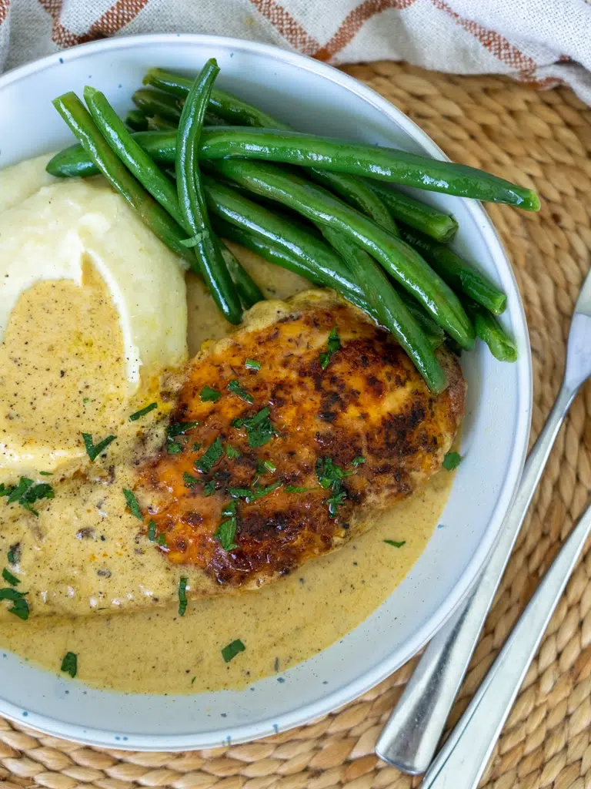

Creamy Garlic Chicken

Perfectly cooked chicken in an easy, creamy garlic sauce.
This Creamy Garlic Chicken is a fast and easy recipe that I think looks impressive, yet requires very little effort and time in the kitchen! This recipe is made with very few simple ingredients making it the perfect weeknight family dinner to enjoy at the end of a long day.
This delicious recipe has quickly become one of your favourites, being viewed over 27 million times across my social accounts! It is also my most made recipe.
Ingredients
Chicken
- 2 chicken breasts, cut in half lengthways to make 4 schnitzels
- 1 tsp salt flakes
- 1/4 tsp pepper
- 1 tsp sweet paprika
- 1 tsp onion powder
- 1 tsp dried thyme
- 1/4 cup plain/all-purpose flour
- 1 tbsp olive oil
- 1 tbsp unsalted butter
Sauce
- 1 tbsp unsalted butter
- 1 tbsp garlic, freshly minced
- 1/2 cup chicken stock
- 300 ml thickened/heavy cream
- 1 tsp Dijon mustard
- 1/2 cup Parmesan cheese
- Salt and pepper, to taste
To Serve
- Mashed potatoes, steamed rice or pasta
- Steamed greens
- 1 tbsp parsley, finely chopped
- Lemon wedges
Instructions
- Sprinkle the chicken with salt, pepper, sweet paprika, onion powder and thyme. Press the chicken into the flour so that all sides are evenly coated.
- Heat the olive oil and 1 tablespoon of butter in a large, deep frying pan over medium-high heat. Add the chicken and cook for 5-6 minutes, or until the chicken is just cooked, turning once halfway through.
- Remove the chicken from the pan and set it aside on a plate.
- To the same pan, add the butter for the sauce. Once melted, add the garlic, stirring for 30 seconds.
- Add the chicken stock and cook for 1-2 minutes until it has evaporated by at least half. Stir in the thickened cream and Dijon mustard, reduce the heat to medium, and simmer for 2 minutes until the sauce has thickened slightly.
- Stir through the Parmesan cheese, season to taste, and return the chicken to the pan for 2-3 minutes or until the chicken is heated through. Serve the chicken with rice, mashed potatoes or pasta and a side of steamed greens. Top with freshly chopped parsley and a squeeze of lemon juice.